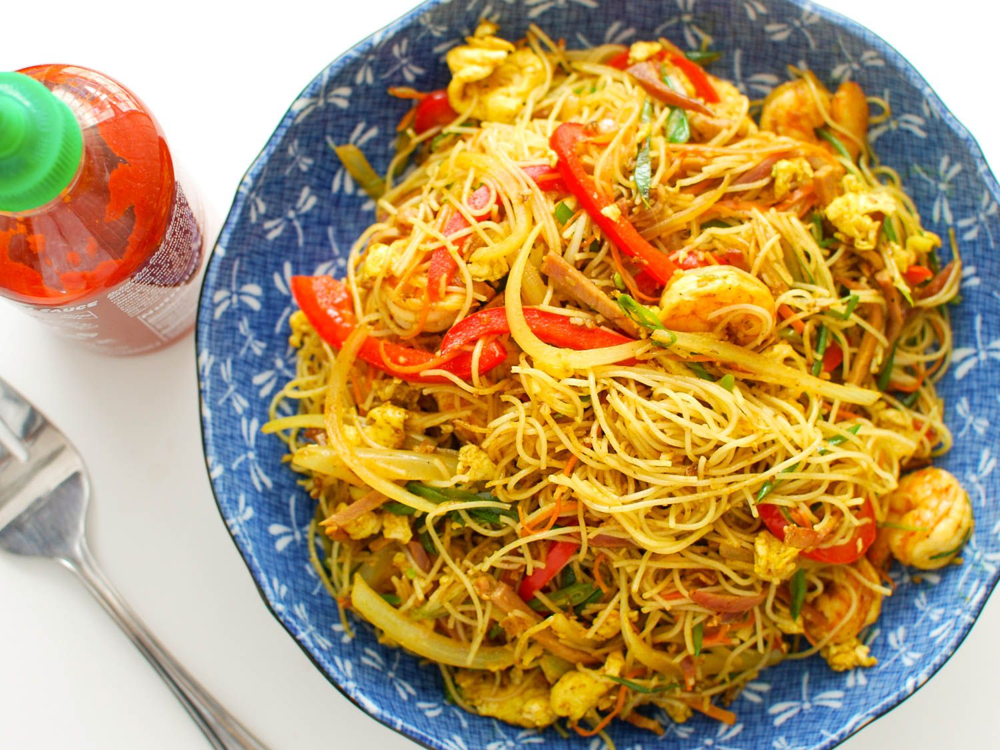

Here is a somewhat spicy curry dish of vermicelli noodles with a medley of veggies and shrimp, chicken, and pork. It's an Asian way to clear out the fridge.

Description
Here is a somewhat spicy curry dish of vermicelli noodles with a medley of veggies and shrimp, chicken, and pork. It's an Asian way to clear out the fridge.
Ingredients
- 2 cups vegetable oil for frying
- 1 cup buttermilk
- 1 cup all-purpose flour
- ½ tablespoon salt
- ½ tablespoon ground black pepper
- 1 teaspoon dried oregano
- 1 pound squid, cleaned and cut into 1/2 inch rings
Steps
-
Step 1
Bring a large pot of lightly salted water to a boil. Add pasta and cook for 8 to 10 minutes or until al dente; drain.
-
Step 2
In a deep skillet or fry pan, brown chicken, pork and garlic in the oil over medium-high heat.
-
Step 3
Reduce heat to medium-low, and add the onion, carrots and water; cover and steam for 5 minutes. Stir in celery and shrimp. Cover and steam for 2 minutes.
Step 4
Mix in the bean sprouts, curry powder and soy sauce; stir together until blended and hot, 4 to 5 minutes. Toss with noodles, and serve with the option of hot pepper sauce and soy sauce as condiments